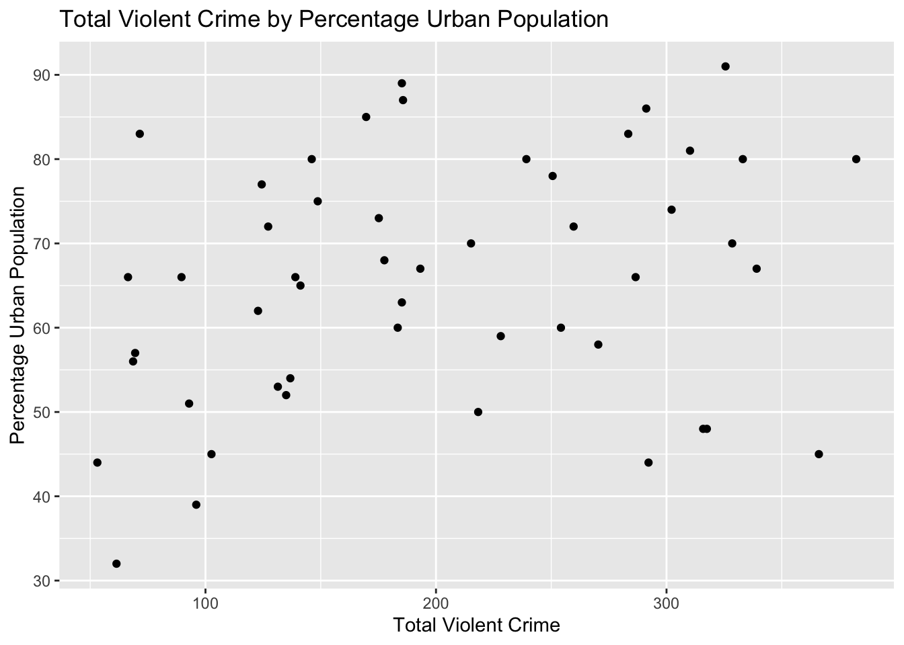
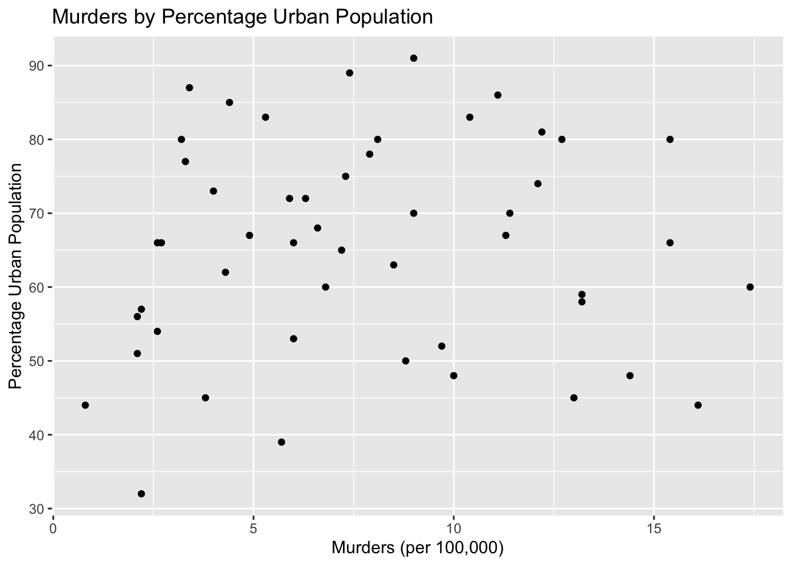
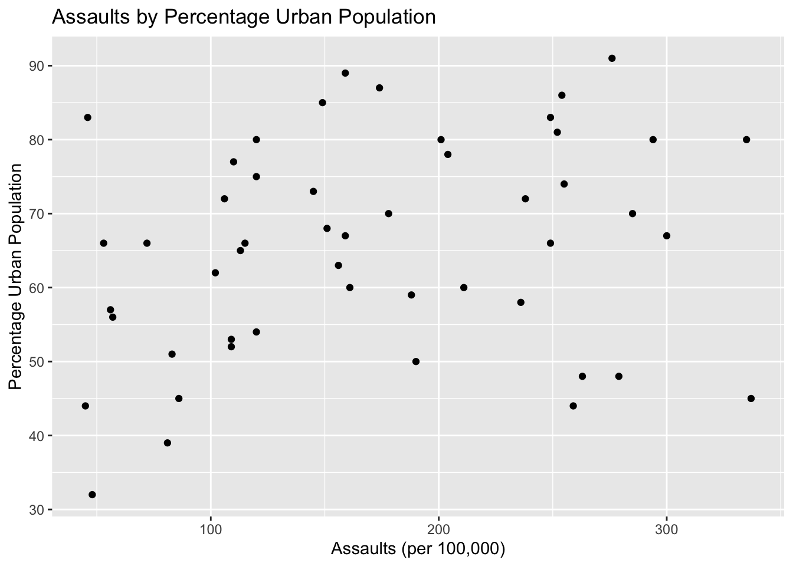
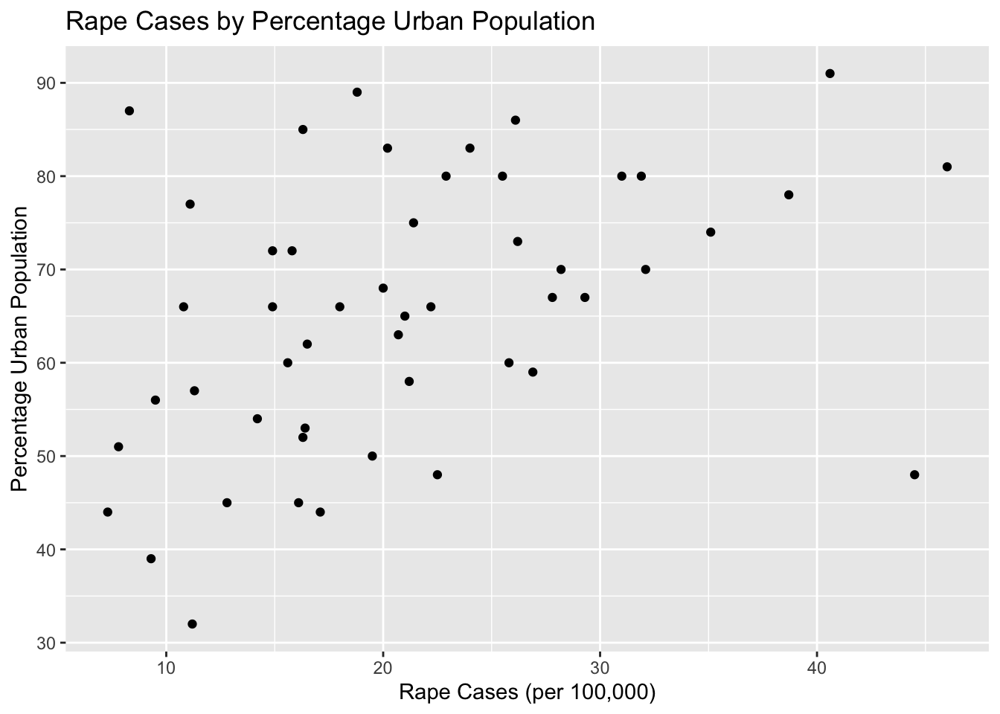

#The goal for this project is too plot and analyze correlations between types of crime and other variables #data: United States Crime Data
library(tidyverse) glimpse(USArrests)## Rows: 50
## Columns: 4
## $ Murder <dbl> 13.2, 10.0, 8.1, 8.8, 9.0, 7.9, 3.3, 5.9, 15.4, 17.4, 5.3, 2.…
## $ Assault <int> 236, 263, 294, 190, 276, 204, 110, 238, 335, 211, 46, 120, 24…
## $ UrbanPop <int> 58, 48, 80, 50, 91, 78, 77, 72, 80, 60, 83, 54, 83, 65, 57, 6…
## $ Rape <dbl> 21.2, 44.5, 31.0, 19.5, 40.6, 38.7, 11.1, 15.8, 31.9, 25.8, 2…summary(USArrests)## Murder Assault UrbanPop Rape
## Min. : 0.800 Min. : 45.0 Min. :32.00 Min. : 7.30
## 1st Qu.: 4.075 1st Qu.:109.0 1st Qu.:54.50 1st Qu.:15.07
## Median : 7.250 Median :159.0 Median :66.00 Median :20.10
## Mean : 7.788 Mean :170.8 Mean :65.54 Mean :21.23
## 3rd Qu.:11.250 3rd Qu.:249.0 3rd Qu.:77.75 3rd Qu.:26.18
## Max. :17.400 Max. :337.0 Max. :91.00 Max. :46.00USArrests <- USArrests %>%
mutate(USArrests,
violent_crime_total = Murder + Assault + Rape
)USArrests %>%
select(violent_crime_total) %>%
arrange(violent_crime_total) %>%
head(10)## violent_crime_total
## North Dakota 53.1
## Vermont 61.4
## Wisconsin 66.4
## New Hampshire 68.6
## Iowa 69.5
## Hawaii 71.5
## Minnesota 89.6
## Maine 92.9
## West Virginia 96.0
## South Dakota 102.6USArrests %>%
select(violent_crime_total) %>%
arrange(desc(violent_crime_total)) %>%
head(10)## violent_crime_total
## Florida 382.3
## North Carolina 366.1
## Maryland 339.1
## Arizona 333.1
## New Mexico 328.5
## California 325.6
## Alaska 317.5
## South Carolina 315.9
## Nevada 310.2
## Michigan 302.2ggplot(data = USArrests) +
geom_point(
mapping = aes(
x = violent_crime_total,
y = UrbanPop
)) +
labs(
title = "Total Violent Crime by Percentage Urban Population",
x = "Total Violent Crime",
y = "Percentage Urban Population"
)
# Correlation between Total Crime and Urban Population
USArrests %>%
summarize(r = cor(violent_crime_total, UrbanPop))## r
## 1 0.2755569A correlation of .28 suggests that total crime and percentage of Urban Population are somewhat related.
ggplot(data = USArrests) +
geom_point(
mapping = aes(
x = Murder,
y = UrbanPop
)) +
labs(
title = "Murders by Percentage Urban Population",
x = "Murders (per 100,000)",
y = "Percentage Urban Population"
)
# correlation between murders and percentage urban population
USArrests %>%
summarize(r = cor(Murder, UrbanPop))## r
## 1 0.06957262# A correlation of only .07 suggests that murder is not related to percentage of urban population
ggplot(data = USArrests) +
geom_point(
mapping = aes(
x = Assault,
y = UrbanPop
)) +
labs(
title = "Assaults by Percentage Urban Population",
x = "Assaults (per 100,000)",
y = "Percentage Urban Population"
)
# Correlation between assaults and percentage urban population
USArrests %>%
summarize(r = cor(Assault, UrbanPop))## r
## 1 0.2588717# A correlation of .26 suggest that there is somewhat of an association between urban population and assaults
ggplot(data = USArrests) +
geom_point(
mapping = aes(
x = Rape,
y = UrbanPop
)) +
labs(
title = "Rape Cases by Percentage Urban Population",
x = "Rape Cases (per 100,000)",
y = "Percentage Urban Population"
)
# Correlation between assaults and percentage urban population
USArrests %>%
summarize(r = cor(Rape, UrbanPop))## r
## 1 0.4113412# A correlation of .41 suggest that there is pretty good evidence that Rape is positively correlated with the percentage of urban population in a stateIn Summary, higher murder rates does not appear to be related to a greater percentage of a states population being urban, whereas rape seems to be pretty strongly related to urban population percentage in a positive direction.